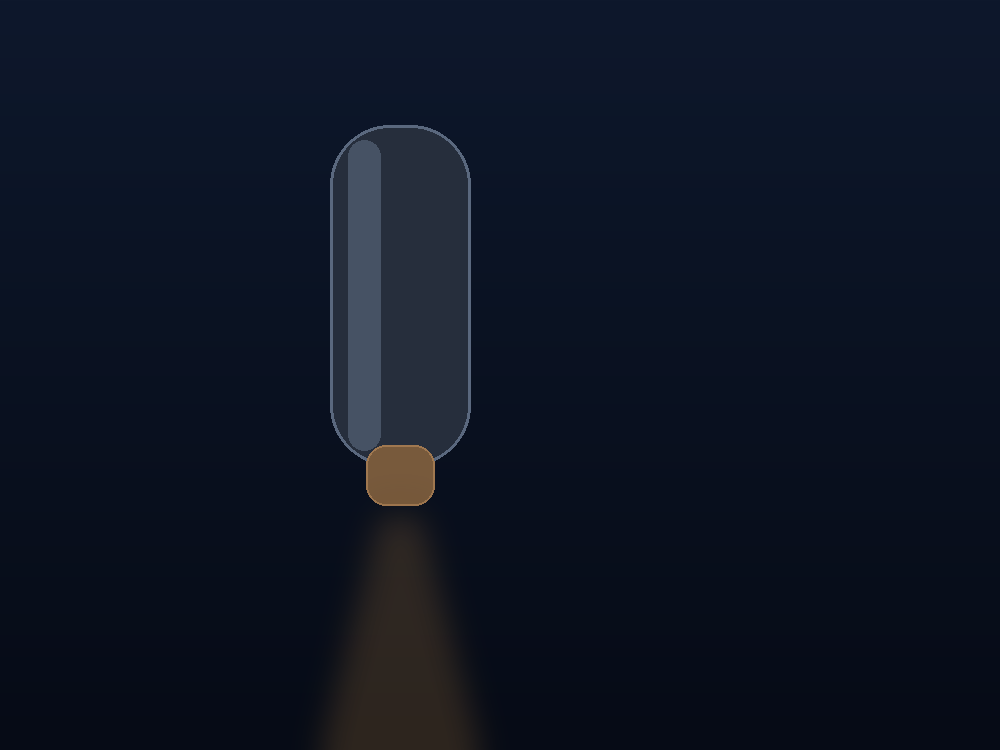
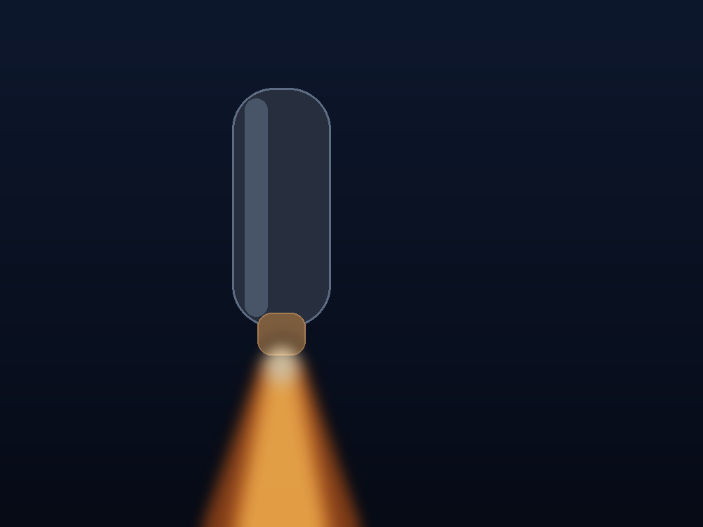

두 프레임(off = 원본, on = 발광 강화본)을 겹치고 opacity만 크로스페이드합니다. 아래는 합성 데모 프레임입니다. 실측 이미지 준비 시 beam-off.png 교체 후 python3 scripts/gen_beam.py --from …/beam-off.png 로 beam-on.png을 재생성하면 동일 CSS로 동작합니다.
opacity
beam-off.png
python3 scripts/gen_beam.py --from …/beam-off.png
beam-on.png

